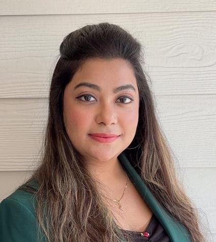

3+ years bridging financial services and advanced analytics — turning complex data into decisions that move the needle for CFOs, product teams, and operations leads.
Targeting: Data Analyst · Financial Analyst · Business Analyst · Product Analyst

About
I sit at that intersection — and it's where I do my best work.
At Northern Trust, I identified pricing inefficiencies across Fortune 500 accounts and delivered analysis that shaped strategy across 12+ international markets — including a $2.7M vendor charge recovery that came from methodical SQL-driven reconciliation, not guesswork.
At UNT, I built Power BI dashboards tracking $600M+ in capital projects and engineered ETL pipelines that cut reporting lag across institutional finance operations. Real infrastructure, real stakeholders, real stakes.
In March 2026 at the SWDSI Conference in Dallas, I presented original research on a GenAI voice agent powered by LLM-based natural language understanding and a RAG pipeline — reducing manual screening time by 40% and revenue leakage risk by 21%.
My strength is context. I know P&L, CapEx governance, and variance analysis as deeply as I know Python ETL pipelines, DAX, and scikit-learn. That dual fluency is rare, and it's what I bring to every engagement.
Career
Portfolio
Presented original research at the SWDSI Conference (Dallas, March 2026). Built a GenAI voice agent powered by LLM-based NLU and a RAG pipeline, dramatically reducing manual screening overhead in enterprise workflows.
↓ 40% screening time · ↓ 21% revenue leakage riskApplied gradient boosting and regression to evaluate demand, cost drivers, and price elasticity across 15+ international freight lanes (DHL case study). Simulated pricing and volume scenarios to optimize rate positioning.
↑ 8–11% projected revenue improvementDeveloped a CapEx forecasting model using historical budget vs. actual data and scenario-based sensitivity analysis (P&G case study). Designed Power BI dashboards integrating P&L, cost center, and CapEx metrics.
↓ 16% forecast deviationAnalyzed high-volume P2P workflows in a simulated ERP environment (Walmart case study). Designed a compliance framework tracking DPO, invoice cycle time, approval lag, and exception rates.
↓ 22% control exceptions · ↑ 18% payment efficiencyBuilt an ML model to predict rural water pump functionality using installation year, source type, and payment model. Full pipeline from EDA to deployment on GitHub.
🔗 Live on GitHubApplied explainability techniques (SHAP) to cold chain transportation data, building interpretability layers over predictive models to surface actionable insights for logistics decision-makers.
🔗 Live on GitHubTech Stack
Resume
Finance & Data Analyst with 3+ years of experience in FP&A, financial modeling, and analytics engineering. Available for Data Analyst, Financial Analyst, Business Analyst, and Product Analyst roles across the US.
Rename your PDF to Ujjaini_Kaviraj_Resume.pdf and upload it to the same folder as index.html
Contact
Actively looking for Data Analyst, Financial Analyst, Business Analyst, and Product Analyst roles across the US. Open to relocation. OPT authorized from June 2026.